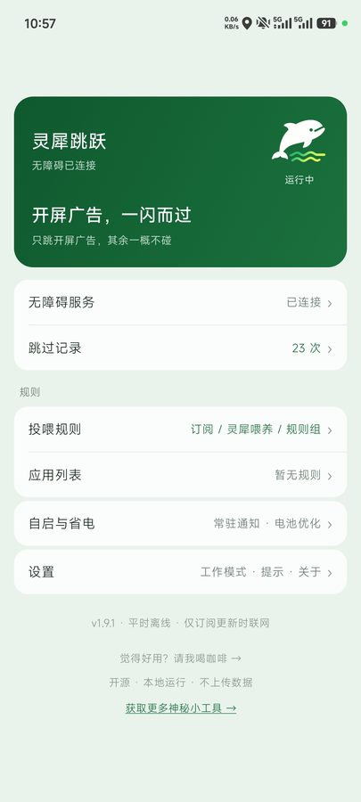
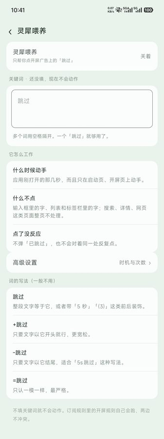
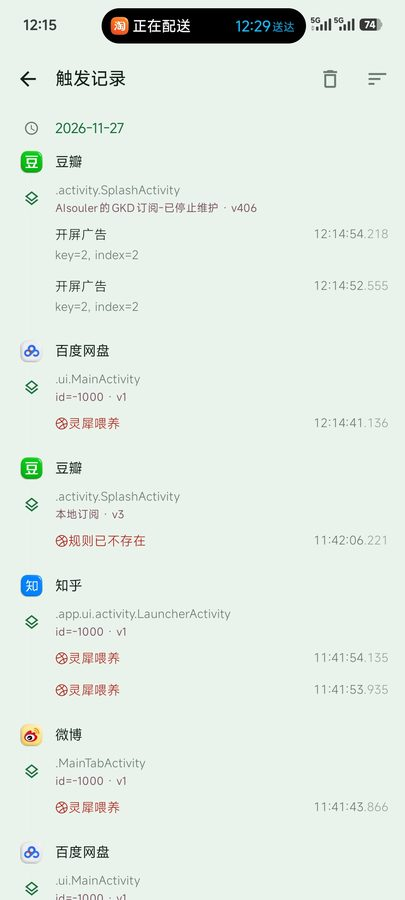

开屏广告，一闪而过
只跳开屏，其余一概不碰
How it decides
不看页面叫什么名字，而是看屏幕上有没有广告。动手之前先扫一遍页面，三条证据满足任意一条才动手。
Why different
点击后等 500ms 复核「跳过」还在不在。还在就说明没跳掉：不弹提示、不计数，也不会对着同一处反复点。
生效时间、每屏最多几次、两次尝试间隔，都能改。默认值已经够用。
不采集、不上传、不埋点。规则与记录只存在这台手机上。
Screens
没有多余的页面。打开就是状态，投喂规则里两件事：填词，或者贴订阅链接。



Capability
| 场景 | 行为 |
|---|---|
| 应用启动时的开屏广告 | 跳过 |
| 屏幕任意位置的「跳过」 | 都能识别 |
| 广告 SDK 的控件 id | 按 id 点 |
| 输入框里打的字 | 不碰 |
| 列表 / 标签栏里的字 | 不碰 |
| 普通页面上的「跳过」 | 不碰 |
| 自绘开屏（抖音、酷安那类） | 交给订阅规则 |
Get started
下载 APK 安装。包名 com.lingxi.jump，可与官方 GKD 共存。
首页「无障碍服务」→ 按引导到系统设置勾选「灵犀跳跃」。
投喂规则 → 点 + 粘贴 GKD 订阅链接；或直接在「灵犀喂养」里填一个 跳过。
FAQ
先看首页「无障碍服务」是不是"已连接"。MIUI / ColorOS 还需要允许"后台弹出界面"与"自启动"，并在最近任务里锁定。
多半是自绘开屏——画面由应用自己画，无障碍树里没有独立按钮。这类只能交给订阅规则，或等广告自己结束。
不会。判定是"有广告才动手"，再加输入框、滚动列表、整屏容器三道否决。每一条都对应一次真实踩过的坑。
点完 500ms 会复核：还在就不弹提示、不计数，也不会对着同一处反复点。
可以。首页 → 自启与省电 → 常驻通知。它是前台服务，用来保证服务不被系统杀掉。
可以。首页 → 自启与省电 → 后台隐藏。建议先给任务加锁再隐藏。
不需要。系统无障碍服务就够，也可以配合 Shizuku 或一次性 ADB 授权。
不采集设备信息、不埋点、不上报。唯一联网行为是你手动添加订阅并点「更新」时。
Verify
下载后可自行核对，确认没有被替换：
sha256: a05d141f0e78f39e26e31cd8e77064146786012d71bbdb7805b470e66629e53e
签名证书（所有版本一致）：
b5:e3:15:84:99:ce:e7:10:8b:5f:11:93:f2:9b:67:ae:15:a4:d0:d3:12:17:c9:ab:50:8f:a0:a9:cf:33:65:a3